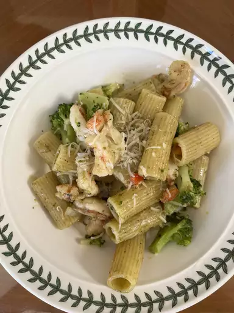

Pesto Pasta Recipe

Description
Pesto pasta is easy to make and full of flavor.
It tastes good hot or cold!
This top-rated pesto pasta recipe, which comes together in just 15 minutes,
is the perfect quick and easy weeknight dinner.
Ingredients
Pasta: Start with your favorite pasta shape.
Onion and oil: Cook the onion in olive oil until it's translucent.
Pesto: Use store-bought or homemade pesto sauce.
Seasonings: This pesto pasta is simply seasoned with salt and pepper.
Cheese: Grate your own Parmesan cheese instead of using the pre-shredded stuff.
Steps
- Boil the pasta in salted water and drain.
- Cook the onion in oil, then stir in the pesto and seasonings.
- Add the pesto mixture to the hot pasta and toss with cheese.